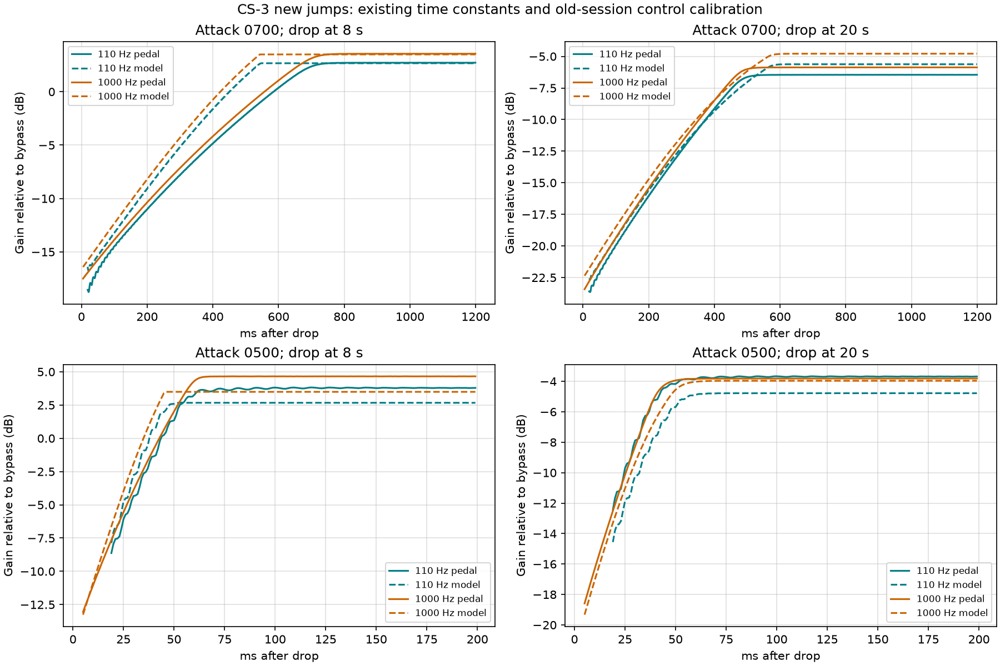

30 October 2026 · Physical captures at 110 Hz and 1 kHz · Analysis only
Follow-up completed: the crossed-level study confirms the limitation and identifies a promising one-state log-release candidate. This report preserves the earlier measurements and pre-recording predictions; its proposed capture has now been completed.
Conclusion: the current rectified-amplitude detector remains a useful baseline, but its fixed release law is inadequate across the tested level changes. Recovery into the lower quiet level is too fast; recovery into the higher quiet level is slightly too slow. One global adjustment of Release cannot correct both. The result repeats at both carriers and both Attack extremes. A replacement model is not yet identified.
This continues the collection audit. The frozen reference is commit 0a346743de472e253869e43887a02727c6a73322, recorded before the new captures. No production C++ was changed.
The six-take plan contains two bypass references and four engaged recordings. Each signal has four-second plateaus at [−36, −12, −36, −24, −6, −24] dB relative to the guitar-peak reference. Level, Tone and Sustain remain at noon; Attack is minimum or maximum; carriers are 110 Hz and 1 kHz. All six played-float32 hashes match their sidecars, all report zero xruns, and no recorded sample reaches |x|≥.999. Marker quality is .998 throughout.
At a settled −12 dB plateau, each engaged take's loopback fundamental differs from its same-carrier bypass by less than .000066 dB and .000080 phase-equivalent sample after stored integer alignment. This does not certify arbitrary timing throughout each recording, but it gives no evidence of an interface gain or alignment error large enough to explain an 80–145 ms recovery discrepancy. Recorded output noise in the final half-second is roughly −99 to −101.5 dBFS RMS. The repeated quiet plateaus within each take agree closely.
Separate level observation: at the −36 dB input plateau, changing Attack from minimum to maximum raises gain by 1.10 dB at 1 kHz and 1.08 dB at 110 Hz. The model predicts no change because its limiter is inactive there. This is associated with the Attack-setting change; gain coupling in the pedal is a hypothesis. There was no return-to-minimum repeat or final bypass, so accidental control movement or pedal-side level drift cannot be fully excluded. The next small session below checks the return condition as well as dynamics.
E[n] = E[n−1] + a± (|x[n]| − E[n−1])
a± = 1 − exp(−1/(fs τ±))
L[n] = 20 log10(max(E[n], ε)) // input normalized to guitar reference
gain_dB[n] = G + M − (1−m) max(0, L[n]+G−C)
y[n] = Tone{x[n] · 10^(gain_dB[n]/20)}
C = −14.25 dB, m = .0117
Attack minimum: τattack = 1.97 ms, τrelease = 189.1 ms
Attack maximum: τattack = 1.58 ms, τrelease = 16.4 ms
The noon Tone chain is unchanged: HP 38.3 Hz/Q .467, LP 18 kHz/Q .482, low shelves 655.8 Hz/Q .480/+0.57 dB and 5456.4 Hz/Q .661/+1.95 dB, normalized at 1 kHz. The renderer simulates the full played marker/gap preamble and signal in double precision.
The application exposes Threshold and makeup rather than a physical Sustain/Level noon map. The missing control mapping was reconstructed using old data only: old Level noon versus full gives M=−14.930884 dB; the old uncompressed noon-Sustain staircase gives gain 3.493320 dB, hence G=18.424204 dB and threshold C−G=−32.674204 dB relative to reference. These mappings are not newly fitted to the validation recordings, but they carry hand-setting and original-calibration uncertainty. Absolute error must be distinguished from dynamic-shape error.
Gain is measured from centered one-carrier-period RMS of output divided by its paired bypass; the same estimator is applied to the model and its input. Output spacing is 1 ms, but effective resolution at 110 Hz is about 9.09 ms. Release t63/t90 use each trace's own settled pre-drop and final gains. RMS scores omit the first two carrier periods, with a minimum exclusion of 5 ms, and cover the following recovery up to 1.2 s. These samples are correlated; no population confidence intervals are claimed.
| Attack / carrier | −12 → −36 dB: measured / predicted t63 | −6 → −24 dB: measured / predicted t63 |
|---|---|---|
| Minimum / 110 Hz | 394 / 312 ms | 284 / 302 ms |
| Minimum / 1 kHz | 397 / 311 ms | 283 / 301 ms |
| Maximum / 110 Hz | 34 / 28 ms | 25 / 28 ms |
| Maximum / 1 kHz | 34 / 26 ms | 25 / 27 ms |
The slow, lower-destination jump also reaches t90 at 616 ms versus 471 ms predicted at 1 kHz. The mismatch is not just a constant output offset. After normalizing both start and final gain endpoints, its recovery-shape RMS is 1.858 dB equivalent at 1 kHz and 1.776 dB at 110 Hz. The higher-destination jump's corresponding errors are .517/.503 dB.
At maximum Attack, shape RMS over the same 1.2-second window is .542/.471 dB for the lower destination and .154/.152 dB for the higher destination (1 kHz/110 Hz). That long window contains much settled output at this fast setting: over the first 200 ms, the lower-destination shape errors are 1.341/1.203 dB equivalent. Raw, unnormalized release RMS across the eight conditions ranges from .253 to 2.018 dB; full per-condition values are in the results artifact.

Renderer cross-check: the same analysis applied to the original 0 → −30 dB jump gives slow t63/t90 of 455/715 ms measured versus 448/703 ms predicted, with .266 dB endpoint-normalized shape RMS. At maximum Attack those times are 41/65 versus 39/63 ms, with .112 dB shape RMS. Thus the original timing calibration largely reproduces while the new lower-destination jump fails. With the explicit old-data control mapping, absolute old-jump RMS is 1.382/.283 dB at minimum/maximum Attack; the archived .27–.34 dB headline must not be treated as an absolute guarantee under every control mapping or new condition.
Tone: at the low, uncompressed plateau, measured 110 Hz versus 1 kHz gain is about −.86 to −.88 dB; the existing Tone model predicts −.825 dB. This is good agreement at those two frequencies. A new ordinary output-tone filter is not the leading explanation for the compression-dependent discrepancy.
Attack transient: at 1 kHz, measured versus predicted settling within 1 dB is 14/11 and 13/11 ms for the two rises at minimum Attack, and 7/7 and 6/7 ms at maximum. Cycle-RMS overshoot differs by less than .8 dB in those cases. At 110 Hz, measured overshoot exceeds the model by roughly 2.3–3.7 dB, but the measurement window is one 9.09 ms cycle and tone/phase effects matter. Do not change attack constants based on an apparent sub-cycle timing discrepancy.
Harmonics: the model correctly produces much stronger detector-related distortion at 110 Hz with fast recovery. At maximum Attack and −6 dB input, measured harmonics 2–5 give 3.51% THD at 110 Hz versus 2.74% modeled; at 1 kHz the values are .418% versus .261%. Paired bypass values are about .036% and .035%, respectively. The dominant measured third harmonics are well above the nearby-bin noise estimates. These are coherent steady-sine measurements, not a general guitar distortion score or proof of the physical nonlinear mechanism.
Scale dependence: a homogeneous linear detector with this fixed gain law predicts output changes of m·6=.0702 dB for a 6 dB input increase while fully compressed, regardless of carrier or time constants. From −12 to −6 dB input at maximum Attack, the measured increases are .193 dB at 1 kHz and .327 dB at 110 Hz. This is additional evidence that the frozen structure misses some amplitude dependence. It does not uniquely distinguish rectifier behavior, VCA law, feedback control or other internal dynamics.
As a diagnostic only, fitting one release constant separately to each endpoint-normalized recovery gives:
| Attack | Current τ | Required for −12 → −36 dB | Required for −6 → −24 dB |
|---|---|---|---|
| Minimum | 189.1 ms | 240.8–243.1 ms | 173.1–173.6 ms |
| Maximum | 16.4 ms | 21.06–21.37 ms | 14.68–14.90 ms |
Each range spans the two carriers. The required factors are roughly 1.28 and .91 across both knob settings. These are fitted effective values, not identified physical time constants and not parameters to install per signal condition. Their opposing changes reject a simple uniform rescaling of the existing Release map.
Supported conclusion: the fixed-law model has an operating-level generalization problem that persists after removing endpoint differences. Unresolved: the starting level, destination level and jump size all changed together in the two new packets. A state-dependent discharge law, a different static gain law near the limiter knee, and control-loop dynamics are competing hypotheses. The present evidence does not justify adding a second detector state or claiming a particular circuit.
The first low-cost candidate to investigate after separating those factors is a one-state nonlinear release, with a positive, bounded time scale depending on detector state or input operating level. Its coefficients are not identified here. Any candidate must explain the original 30 dB jump, both new packets and the next crossed packets with one control law; it must also preserve the reasonably matched 1 kHz attack behavior and low-frequency distortion trend.
The prepared crossed-level plan has one bypass and one engaged take, both at 1 kHz. Each uses [−36, −6, −36, −24, −12, −24] dB plateaus of four seconds, plus a two-second tail. Set only Attack back to its minimum hard stop; keep Level, Tone and Sustain at noon and the interface unchanged. Total recorded audio is about 54 seconds.
This completes the two-by-two comparison: the new drops are −6 → −36 and −12 → −24 dB. Each swaps the starting level while holding one previous destination level. Returning Attack to minimum also checks whether the earlier low-level gain returns, and the new bypass checks calibration. It is more informative than another intermediate Attack setting or a repeat of the original 30 dB jump.
| Frozen diagnostic hypothesis | Predicted t63 for −6 → −36 | Predicted t63 for −12 → −24 |
|---|---|---|
| Existing fixed τ=189.1 ms | 388 ms | 226 ms |
| Effective τ follows destination level | 500 ms | 207 ms |
| Effective τ follows starting level | 355 ms | 290 ms |
The hypotheses deliberately predict different orderings. Full frozen predictions and source-result hashes are saved in the new session's analysis-protocol.json. Compare entire normalized recovery shapes and t63/t90, not just whichever single timing number happens to agree. Agreement with one explanation would favor it behaviorally; disagreement with both points toward jump-size/history or within-release state dependence. Neither outcome identifies the original circuit.
cdpython tools/capture/capture.py run \ captures/boss/cs-3/2026-10-30-detector-crossed \ tools/capture/plans/cs-3-detector-crossed.json
Keep the current CS-3 as the baseline. Do not replace the Release table with the single-drop fits, add a carrier-dependent correction, or change the output Tone to hide detector mismatch. No validated replacement architecture is ready yet. A roughly 100 ms recovery-shape difference could matter for quiet notes following loud notes, but audibility has not been tested. Gain-control coupling and harmonic refinements should not grow the model unless they improve the intended musical behavior.
OPENBLAS_NUM_THREADS=1 MPLCONFIGDIR=/tmp/namx-mpl \ python tools/research/analyze_cs3_detector.py
Analysis and numerical renderer · complete measurements and diagnostics · figure. The script needs NumPy, SciPy, SoundFile, Numba and Matplotlib, plus the old and new WAVs in their capture directories. Old sidecars can be read from the frozen Git commit when absent in the working checkout. The fixed detector and gain-law prediction is separate from explicitly labeled post-hoc tau fits and endpoint-normalized diagnostics.